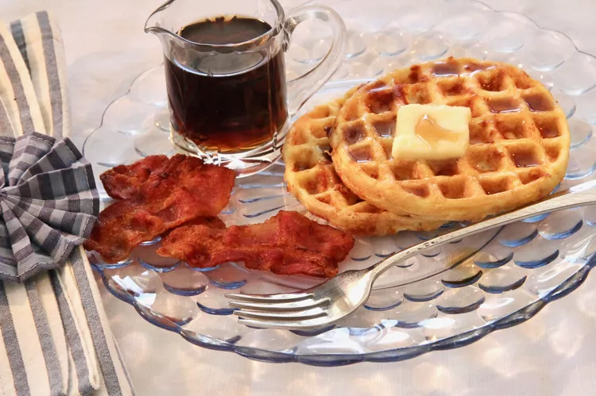

Chaffles

Description
This chaffles recipe makes low-carb waffles that can be used in so many ways. You can change the texture by adding some almond or coconut flour, turn them into sandwiches, modify them into a dessert, change the flavor by using different cheese, etc.
This is a basic chaffle, and it's delicious for breakfast with a pat of butter and a drizzle of sugar-free syrup.
Ingredients
- 1 large egg
- ½ cup shredded mozzarella cheese
Steps
- Preheat a waffle maker.
- Whisk egg in a small bowl; stir in mozzarella cheese until batter is well combined.
- Pour 1/2 of the batter onto the preheated waffle maker, spreading it out from the center with a spoon. Close the waffle maker and cook until steaming stops and chaffle is well-browned, about 3 minutes. Don't overcook, as that will make it chewy. Repeat with remaining batter.